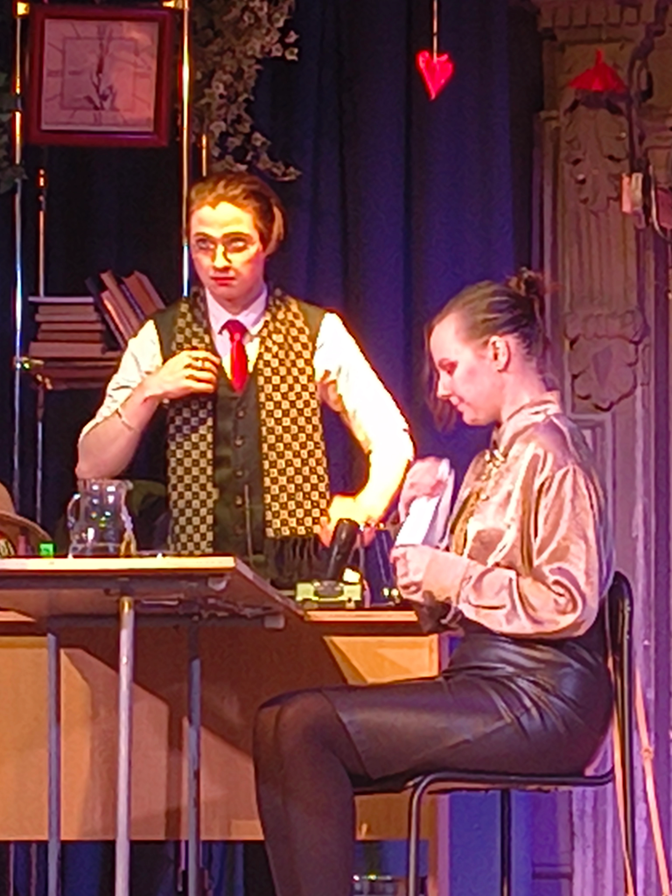

За лаштунками театру «Резонанс» завжди відбувається щось магічне, але цей випадок здивував навіть досвідчених акторів.
Під час підготовки до вистави «Цікавий випадок у психологічній практиці» ми зіткнулися з неочікуваною перешкодою. Сцена в кабінеті ніяк не піддавалася: світло було занадто різким, а актори відчували напругу, яка не відповідала сценарію.
«Ми шукали підсвідомість персонажа, а знайшли дитячу травму електричної розетки.»
Виявилося, що один із софітів періодично миготів через технічну несправність. Наш головний герой, настільки увійшовши в роль психолога, замість того щоб кликати техніка, почав «вести діалог» із розеткою, намагаючись зрозуміти її «біль».


Цей курйозний момент миттєво зняв напругу в колективі. Всі розсміялися, технік швидко все полагодив, а актори знайшли саме ту легку, іронічну інтонацію, якої нам бракувало для прем'єри.
Театр — це не лише текст, це жива енергія людей, які створюють диво тут і зараз. Чекаємо на вас у залі!